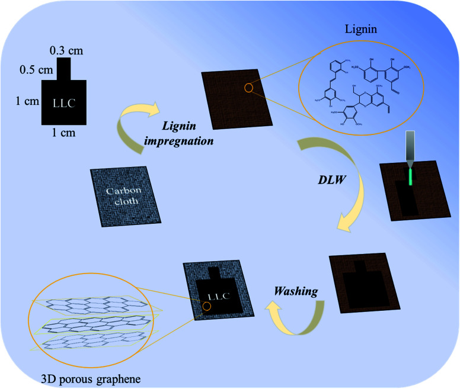
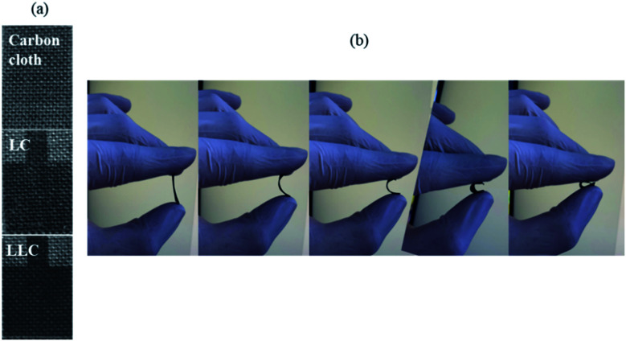
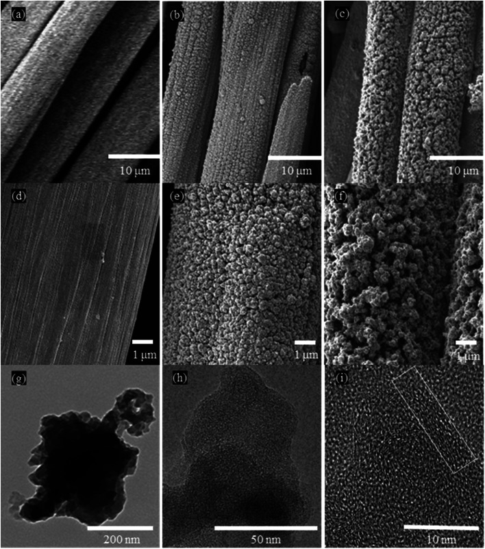
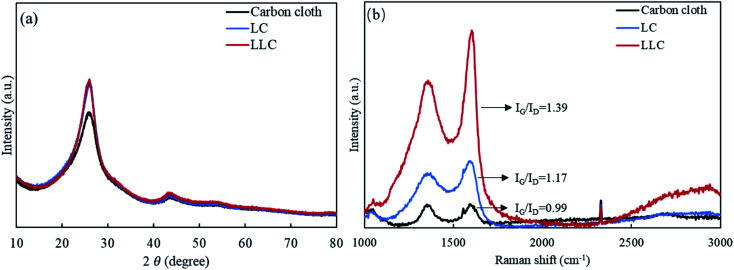
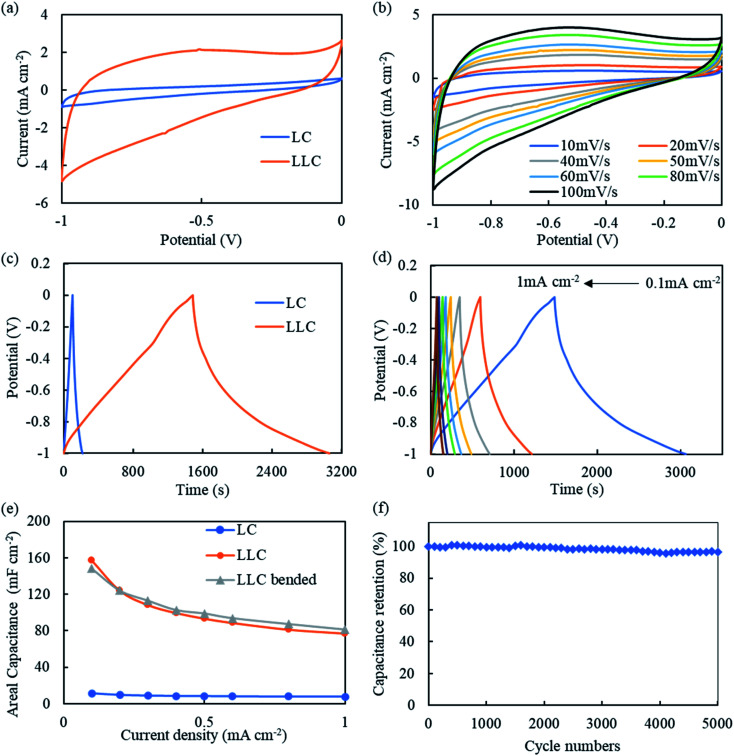
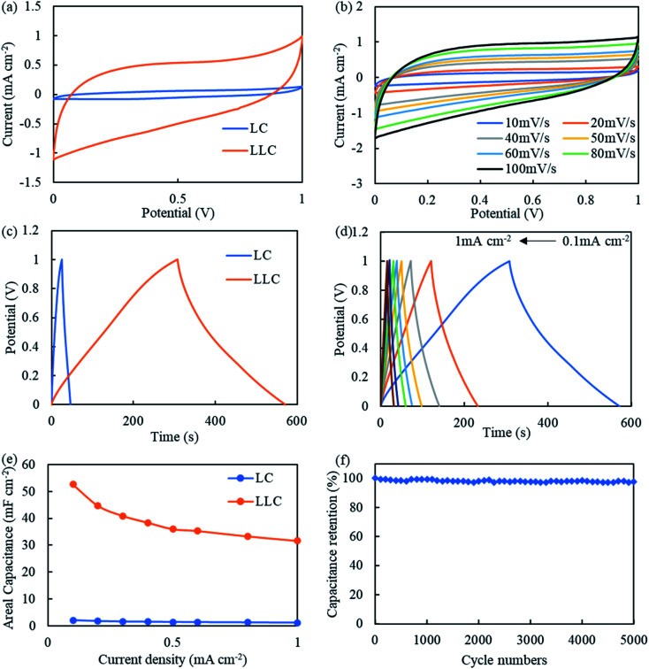

Lignin-derived 3D porous graphene on carbon cloth for flexible supercapacitors†
本地阅读版：出版社提交的完整 XML 正文与原图。排版由本项目生成；原始 XML 为证据。不是出版社 PDF。
DOI: 10.1039/d1ra01754c
Abstract
AbstractIn this work, we reported a new method to fabricate flexible carbon-based supercapacitor electrodes derived from a commercialized and low-cost lignin. The fabrication process skips traditional stabilization/carbonization/activation for lignin-based carbon production. Also, the process reported here was green and facile, with minimum solvent use and no pretreatment required. Characterization of the lignin showed that it has common properties among all types of lignin. The lignin was impregnated on carbon cloth and then subjected to direct laser writing to form the desired electrodes (LLC). The results showed that lignin was successfully bonded to carbon cloth. The LLC has a good porous carbon structure with a high IG/ID ratio of 1.39, and a small interlayer spacing d002 of 0.3436 nm, which are superior to most of the reported lignin-based carbons. Although not optimized, the fabricated LLC showed good supercapacitance behavior with an areal capacitance of 157.3 mF cm−2 at 0.1 mA cm−2. In addition, the superior flexibility of LLC makes it a promising electrode that can be used more widely in portable devices. Conceptually, this method can be generalized to all types of lignin and can define intriguing new research interests towards lignin applications.
Abstract
Lignin was directly grown on carbon cloth via laser writing to form 3D porous graphene for flexible supercapacitors.
Introduction
P0001
Lignin is the most abundant aromatic polymer in nature. It presents in most of the lignocellulose biomass and provides structural strength to plants.1 It is estimated that about 70 million tons of lignin are generated annually as waste from pulp and the paper industry.2 In addition, more types of lignin are produced with the development of biorefineries.3 In this regard, lignin is a low-cost and renewable raw material with large availability, thus the development of lignin-based materials can alleviate our dependence on petroleum. However, compared with cellulose and hemicellulose, lignin's application is much underdeveloped due to its structural complexity and poor degradability. It is reported that about 98% of lignin is directly burned as solid fuels, with the remainder being used in relatively low value-added applications.4 One feature of lignin is its high aromaticity, which leads to a high carbon yield of lignin, and makes lignin a promising precursor for producing carbon-based materials. Researchers have converted lignin into carbon fibers,5 carbon mats,6 activated carbons,7 templated carbons,8 activated carbon fibers,9 and carbon film,10 just to name a few. These carbon-based materials have relatively high market value in various advanced applications, thus can valorize lignin as raw precursors. With the growing needs for energy storage in current society, supercapacitors have attracted great research interests for its fast charge/discharge rate, long cycle life, high energy density, less environmental unfriendliness etc. Specifically, carbon as the low-cost material with many merits such as chemical-stable, porous, and electroconductive,11 was investigated as main material for supercapacitor electrodes. Researchers already thoroughly studied carbon-based supercapacitors in terms of (1) design of different dimensional carbon materials; (2) fabrication methods and the corresponding capacitor's performance; (3) mechanisms study of the charge/storage process; (4) development of flexible and stretchable carbon-based supercapacitors, which shows its high application values.12,13 However, most of the work are focusing on carbon materials derived from non-renewable resources. In this context, research efforts have been made to use renewable and environmentally friendly carbon sources, such as lignin, to fabricate supercapacitor electrodes, and relevant work are increasingly reported to meet the trends of employing clean energy worldwide.14
P0002
Traditionally, powder lignin is used to produce porous carbon. In a typical process, lignin is carbonized at high temperatures under inert atmosphere to produce carbon powder. The carbon powder is commonly activated via physical (e.g. CO2, H2O, O2) or chemical methods (e.g. KOH, H2SO4, H3PO4) to generate hierarchical pores. Then, the derived activated carbon is integrated into electrode materials by binders. In more advanced technology, lignin is electro-spun into nanofibers and formed carbon fiber mats with flexibility and high surface area.9,15,16 The carbon fiber mats are usually self-standing and can be directly used as electrodes. Since lignin has poor electro-spinnability, addition of co-spinning polymers is necessary. Upon obtaining the fiber mats, the carbonization and activation methods are similar to that for lignin powder, but an additional stabilization step is often required before carbonization to avoid adhesion of the fiber, which otherwise will cause brittleness of resultant carbon fiber mats. To control and enhance the porosity of lignin-derived carbon, researchers have chosen multiple routes to facilitate pore generation.17–19 Yet, the relatively tedious process to produce porous carbon cannot be avoided. More recently, direct laser writing (DLW) technique is found efficient in producing 3D porous graphene structures on many substrates.20 The process does not involve traditional carbonization and activation, thus is more facile and energy saving. Therefore, it is intriguing to investigate this technique on producing lignin-derived porous carbon. As a result, few researchers start to realize the employment of this technology on producing lignin-derived porous carbon. Yet, according to all related work the lignin has to be performed into film with the addition of at least one-third of other polymers,21–24 and the fabrication of film causes additional work. Moreover, according to our preliminary studies the as-prepared film is prone to crack due to the instant-contraction under DLW. Also, the resultant carbon film, although claimed to be flexible, is indeed brittle upon drying due to the nature of lignin.
P0003
Encouraged by this new technology, we propose a rather simple route using DLW to produce lignin-derived 3D porous graphene as flexible supercapacitor electrodes. In this work, lignin solution was immersed into carbon cloth to form the lignin–carbon cloth composite, and the composite was directly transformed into carbonaceous material by using DLW technique. Following key points make this work innovative: (1) lignin was directly bonded on carbon fiber within carbon cloth via DLW, therefore the superior flexibility of carbon cloth will extend to the fabricated materials. (2) The process involves minimal chemicals and no heat treatments, and lignin does not need to be pretreated or pre-shaped for processing. Instead, pure lignin can be pyrolyzed at instant high temperatures generating by DLW, and formed into graphitic carbon with abundant pores; (3) no binder is needed to manufacture the electrodes, as the material are chemically bonded together. Also, both carbon cloth and the lignin-derived porous graphene has well conductivity; (4) the carbon cloth has well graphitic structure that may serve as templating agent to facilitate the formation of 3D porous graphene structure from lignin.25 This is for the first time, to employ this new route on producing solely lignin-derived porous graphene, and will promote the future interests towards producing lignin-based carbon as flexible electrodes.
Materials and methods
Materials
P0004
Hydrolytic lignin (Mw: 2000–3000, derived from eucalyptus, hardwood) was provided by Jining Mingsheng New Material Co. Ltd, Shandong Province, China. The lignin was received and washed with deionized water to remove inorganic impurities. Carbon cloth (WOS1002) purchased from Taiwan Tanneng company was rinsed with ethanol before use. Dimethyl formamide (DMF), potassium hydroxide (KOH) was purchased from Macklin and used as received.
Fabrication of electrodes
P0005
For lignin solution preparation, 2 g of lignin was fully dissolved in 10 ml DMF. And 0.5 ml of the as-prepared solution was decanted into a customized aluminum foil cube with carbon cloth as the substrate. The DMF was open air dried in an oven overnight and the lignin was impregnated on the carbon cloth. The composite was then subjected to direct laser writing (DLW) using a 10.6 μm CO2 Laser (Epilog) at a power of 6.0 W with scan rate of 9 mm s−1 to form the desired carbonized region (1 cm × 1 cm for test region, 0.3 cm × 0.5 cm for electrode connection). All experiments were conducted under ambient condition. After DLW, the residual lignin was washed off with 6 M KOH and then rinsed with double deionized water until neutral pH. The obtained electrode was designated as LLC (laser-lignin–carbon cloth). To evaluate the effect of DLW on carbon cloth, carbon cloth without lignin was also laser written under same procedure, and the electrode was designated as LC (laser-carbon cloth). A scheme on producing LLC is provided in Fig. 1.
P0006
Schematic design of the fabrication of LLC.
Characterizations
P0007
Thermal gravimetric analysis (Innuo TGA-1000B, Shanghai) was conducted under nitrogen at 50 ml min−1. About 20 mg sample was weighted and heat from room temperature to 900 °C at a heating rate of 10 °C min−1. The ash content of lignin was determined by weighing before (1 g) and after burning out the lignin at 950 °C for 30 min in a muffle furnace. Glass transition temperature (Tg) was determined using a differential scanning calorimeter (Innuo DSC-BS5, Shanghai). About 10 mg sample was rapid heated to 200 °C and cooled to 25 °C to eliminate thermal history, and then the sample was reheated to 200 °C at a heating rate of 20 °C min−1 to determine Tg. Fourier transform infrared (FTIR) analysis was conducted using a Thermo Scientific Nicolet iS10 (Thermo Fisher Scientific, Inc., USA) equipped with an ATR accessory. Identifications of the peaks are based on the literatures.26 [1H13C] 2D HSQC NMR spectrum was collected using a Bruker Avance III HD 500 MHz spectrometer. For sample preparation, 100 mg of lignin was dissolved in 1 ml DMSO-d6. Identification of peaks were referred to previous work.27–29 XRD test was measured on a Rigaku D/MAX-2500/PC at 40 kV with 70 mA Philips X'pert diffractometer equipped with Cu kα radiation (λ = 1.5418 Å), with the 2θ range from 10° to 80° at the scan rate of 0.5° min−1. Raman spectra was obtained using a Raman microscope system (DXR2xi, Thermo Fisher Scientific, Inc., USA). The wavelength of the laser was 532 nm. The spectra fitting was conducted with Origin software using Gaussian curve fitting. The crystalline size (La, in nm) of LC and LLC are calculated based on equation:30
P0008
where λl is the laser wavelength and (IG/ID) is the intensity ratio of the G and D peaks. The surface morphology was observed using a field emission scanning electron microscopy (FESEM, Hitachi, Japan, JEOL-7500F). The interior and detailed morphology were investigated by HRTEM (FEI, Tecnai G2-F30) with an accelerating voltage of 300 kV. X-ray photoelectron spectroscopy (XPS) was carried out on a Thermo ESCALAB 250Xi device with Al Kα X-ray beams as excitation source (hv = 1486.6 eV). The pore size distribution was evaluated by N2 adsorption–desorption isotherms measured on an N2 adsorption/desorption analyzer at 77 K (ASAP 2420, Micrometrics, USA). The electrochemical test was conducted using an electrochemical workstation system (Ivium Vertex.C. EIS, Netherland) at room temperature. LC and LLC in a three-electrode system was first executed to evaluate their characteristics as electrodes. A 6 M KOH was used as the electrolyte, with Pt foil as counter electrode and AgCl/Ag as reference electrode. The LC or LLC with 1 cm × 1 cm laser written was directly used as working electrode. Cyclic voltammetry (CV) tests were performed within the potential window of −1 to 0 V, with different scan rates of 10–100 mV s−1. Galvanostatic charge–discharge (GCD) tests were performed with the current densities of 0.1 mA cm−2 to 1 mA cm−2. Electrochemical impedance spectroscopy (EIS) tests were performed at the open circuit voltage with an amplitude of 10 mV, and in the frequency ranges of 0.1 Hz to 100 kHz. The areal capacitance (CA) of LC or LLC was calculated according to equation:
P0009
where I (A) is the applied constant current, Δt (s) is the discharge time, V (V) is the voltage window, and S (cm2) is the area of the testing region (1 cm2). LC and LLC were also assembled as symmetrical supercapacitors and tested in a two-electrode system. The symmetric supercapacitors device was built with two LLCs, which were separated with the nonwovens separator (NKK-MPF 30AC-100, Japan) in 6 M KOH electrolyte (or 1 M H2SO4/PVA gel for CA comparison in Table S1†). CV tests were conducted at 0–1 V potential window and GCD tests were conducted at current densities of 0.1 mA cm−2 to 1 mA cm−2. The areal capacitance of the symmetrical supercapacitor was calculated according to equation:
P0010
where I, Δt, V, and S denoted the same in eqn (2). The energy density (E) and power density (P) are calculated based on following equations:
Results and discussion
Lignin characterizations
P0011
FTIR spectrum of the lignin as shown in Fig. S1† is typical for hardwood-derived lignin, and assignments of main peaks are labelled on the spectrum. As can be seen, peaks standing for aromatics (peak 6) in lignin, especially S/G ring-derived units (peak 5 and 8) are observed. The lignin possesses abundant hydroxyls (peak 1) resulting from aromatic hydroxyls and aliphatic hydroxyls (peak 11). These hydroxyls make lignin reactive and entangled via hydrogen bonding. Peaks 2, 3, 7 and 12 represent the lignin contains CH2 or CH3, which can come from both the aliphatic side chains and methoxyls on aromatic rings. Peaks 4, 9, and 10 indicate the lignin possess abundant ether (C–O), carbonyl (C <svg xmlns="http://www.w3.org/2000/svg" version="1.0" width="13.200000pt" height="16.000000pt" viewBox="0 0 13.200000 16.000000" preserveAspectRatio="xMidYMid meet"><metadata> Created by potrace 1.16, written by Peter Selinger 2001-2019 </metadata><g transform="translate(1.000000,15.000000) scale(0.017500,-0.017500)" fill="currentColor" stroke="none"><path d="M0 440 l0 -40 320 0 320 0 0 40 0 40 -320 0 -320 0 0 -40z M0 280 l0 -40 320 0 320 0 0 40 0 40 -320 0 -320 0 0 -40z"/></g></svg> O) and ester (O <svg xmlns="http://www.w3.org/2000/svg" version="1.0" width="13.200000pt" height="16.000000pt" viewBox="0 0 13.200000 16.000000" preserveAspectRatio="xMidYMid meet"><metadata> Created by potrace 1.16, written by Peter Selinger 2001-2019 </metadata><g transform="translate(1.000000,15.000000) scale(0.017500,-0.017500)" fill="currentColor" stroke="none"><path d="M0 440 l0 -40 320 0 320 0 0 40 0 40 -320 0 -320 0 0 -40z M0 280 l0 -40 320 0 320 0 0 40 0 40 -320 0 -320 0 0 -40z"/></g></svg> C–O) groups. The ether group reflects the presence of most common lignin molecule linkages via β-O-4, α-O-4, 4-O-5, etc., and the carbonyl groups may come from oxidation and esterification of lignin during extraction (where the hardwood suffers hydrothermal treatment at 160 °C for 3 h to obtain hydrolytic lignin). Note that the lignin used in this study has relatively intense C <svg xmlns="http://www.w3.org/2000/svg" version="1.0" width="13.200000pt" height="16.000000pt" viewBox="0 0 13.200000 16.000000" preserveAspectRatio="xMidYMid meet"><metadata> Created by potrace 1.16, written by Peter Selinger 2001-2019 </metadata><g transform="translate(1.000000,15.000000) scale(0.017500,-0.017500)" fill="currentColor" stroke="none"><path d="M0 440 l0 -40 320 0 320 0 0 40 0 40 -320 0 -320 0 0 -40z M0 280 l0 -40 320 0 320 0 0 40 0 40 -320 0 -320 0 0 -40z"/></g></svg> O peak compared to other lignins,31 indicating the lignin suffer a large extent of remodeling during the extraction.
P0012
2D-NMR spectrum of lignin is shown in Fig. S2.† Assignments of the correlation peaks are labeled in the figure as well. According to the spectrum, the lignin has high content of methoxyls, a characteristic of hardwood-derived lignin. The correlation peaks indicative of Aγ and Cγ are also found with high intensity. This is assigned to the most present β-O-4 and β–β′ bonds in lignin, and implies the lignin is not thoroughly decomposed during the extraction. Typical correlation peaks for syringyl and T3 are also found with certain intensities. These structures are typical for hardwood lignin with methoxyls on both ortho positions to the aromatic units occupied. Additionally, peaks indicative of G5/G6 is found in the spectra, indicating the G-derived units are also with abundance in the lignin. Correlation peaks related to PCAβ/PCA3/5 are discernable as well, indicating the presence of H-derived units. Noteworthily, in the spectra other H-related correlation peaks are not found, indicating there is negligible amount of H units totally in the lignin, which is common for hardwood-derived lignin. Usually, it is believed a low S/G (or H) ratio is prone to lead to a high carbon yield in lignin, for that the exposed ortho position on G (or H) units can promote intermolecular cross-linking between lignin molecules. From this aspect, hardwood-lignin may undergo less cross-linking during DLW thus become easier to form porous carbon structure.
P0013
TG and DSC analysis are often used to learn the thermal properties of lignin. In this study, lignin is analyzed using these methods and the results are shown in Fig. S3.† TGA result tells the lignin has slight mass loss under 150 °C, which can be mainly ascribed to the loss of bound water and other volatiles.32 DTG curves indicates the lignin starts to decompose at around 200 °C, and is considered as thermally stable (5% weight loss) until 256 °C. The mass loss between 256 °C to 365 °C (peak of DTG curve) are majorly the decomposition of aliphatic side chains and volatilization of aromatics with low molecular weight.33 After 365 °C, the rate of mass loss decreases, at which temperature range the breaking of interunit linkages, demethoxylation, lignin condensation, etc. happen to form more condensed aromatic structures through charring.34 The condensation lasts to about 650 °C and further enhanced at elevated temperatures. Another DTG peak is found around 765 °C, probably due to the decomposition of recalcitrant interunit C–C linkage and recombine to form more aromatic structures at this temperature range. The fixed carbon of the lignin is 41.1%, which is a relatively high number compared with hardwood lignin, indicating the structure of the lignin is condense. The ash content of the lignin is less than 0.2%, indicating the inorganic impurities are effectively removed by the pre-washing. Usually, the presence of inorganic impurities is not desired since they will be converted into ash and retained in carbon, which will influence the purity of carbon and make the analysis of products challenging. However, we also suggest to specifically investigate the types of inorganic types, and their influence on the formation of carbonaceous materials, or on the electrochemical properties of the resultant carbon. Some of the elements, such as Si, Fe, Cu, Ni, etc, are proved to be beneficial for the formation of graphene-like structures.35–37
P0014
The DSC curves shown in Fig. S3† are typical for lignin material. Lignin used in this study shows wide endothermal characteristics through the entire heating course, and a dip on curve can be first recognized around 105 °C indicative the Tg of the lignin. Another small dip is also observed between 140–180 °C indicating the lignin has a second Tg. When the temperature approaches to 200 °C, the curve turns upwards indicating the lignin start to decompose, which is in accordance with the TGA results. Tg is an important parameter reflecting the degree of cross-linking and branches of lignin, thus determining the processability of lignin. A low Tg reflects lignin has good mobility as well as more branches on molecule level, while lignin with high Tg are tough to remodel upon heating. However, in this study the graphitization of lignin finished only in seconds, leaving quite limited time for the lignin molecules to remodel during the treatment. The relationship between Tg of lignin and the formation of the porous carbon is worth of further study.
Formation of LC and LLC
P0015
The appearance of carbon cloth, LC, and LLC are shown in Fig. 2(a). Upon DLW, LC and LLC remain the superior flexibility benefiting from carbon cloth as illustrated in Fig. 2(b), which make them attractive in more application scenarios. Direct laser writing on carbon cloth (i.e. LC) render the carbon cloth further graphitize and form a region with dark color. Mass loss of LC is also observed after DLW, demonstrating DLW can initiate further graphitization of carbon cloth with the release of volatiles. Apparently, when lignin is impregnated on carbon cloth, after laser writing (i.e. LLC) the written region turns into darker color with mass increase (approx. mass increase was 8.6% on per cm2 of carbon cloth) compared with the region on LC, implying more carbon are formed due to the graphitization of lignin at intense laser power. The formed black region is tightly attached with carbon cloth that cannot be removed by ultrasonic cleaning. Therefore, lignin is transformed into carbon simultaneously bonded with carbon cloth and formed the integrated composite material. Morphologies of all the samples are observed by SEM and the images are shown in Fig. 3(a–f). As can be seen, carbon cloth is composed of carbon microfibers with smooth surface, and this structure without pores is not suitable as supercapacitor electrodes. After DLW, the microfibers crack and the surface become rather rough with small openings generated. For LLC, the surface of the composite become quite different. Foam-like structure are formed on LLC, rendering the microfibers with large number of pores in various sizes, which can contribute to the absorption of ions and act as supercapacitor electrodes. The structure of LLC is further revealed by HRTEM, as shown in Fig. 3(g–i). LLC displayed well nano-valid structures as laser-carbonized lignin. At high magnifications, few thin flakes of graphene can be observed at the edge of LLC, pointing toward the common 3D porous graphene structure formed under DLW technique. The porous structure of LLC was further investigated with N2 adsorption–desorption analysis and the result was shown in Fig. S4.† Note that separating active materials (i.e. lignin-derived carbon) on LLC from carbon cloth substrate is difficult, therefore the whole LLC (lignin-derived carbon and carbon cloth) was used for tests which leads to much smaller surface area. As can be seen from Fig. S4(b),† LLC is abundant with micropores below 2 nm and mesopores ranging from 5 nm to 50 nm, proving the hierarchical porous structures of LLC. This structure is beneficial for using as electrical double layer capacitance (EDLC) electrodes for that the larger pores can provide pathways for ion diffusion and the micropores can adsorb the ions.
P0016
(a) Photographs of carbon cloth, LC, and LLC; (b) LLC bending at different angles.
P0017
SEM images of carbon cloth (a and d), LC (b and e) and LLC (c and f); HRTEM images of LLC at 200 nm (g), 50 nm (h), and 10 nm (i).
P0018
The structural analysis of all composites were investigated by Raman and XRD tests, and the results are shown in Fig. 4. XRD profile (Fig. 4(a)) of carbon cloth show peaks at 25.9° and 43.5°, which are two typical peaks for carbon-based materials. The signal suggests the carbon microfibers within carbon cloth are composed of graphitic carbons. The intensity of (002) peak for LC is enhanced compared to that of carbon cloth, indicating more crystallized graphite structure are formed upon DLW. For LLC, the XRD pattern well overlaps with pattern from LC, suggesting lignin-derived carbon on LLC also possess well graphitic structure and increased crystallinity. Note that in most studies lignin is considered with poor ability to graphitize, and the (002) peak of lignin-derived carbon is blunt and appeared at much lower angle.38 Inspiringly, results showing in this study suggests that lignin has successfully converted into structure with much closed interlayer spacing and grown on carbon cloth using such technique. Fernando et al. recent published a work using graphene oxide liquid crystal (GOLC) to improve the graphitic structure of lignin-based carbon fiber, and it was demonstrated that GOLC could act as template to facilitate the graphitization of lignin at much lower temperatures.25 Similarly, the improved graphitic structure and increased crystallinity of LLC can also be a result of templating effect from LC during DLW. The interlayer spacing (d002) of LLC is calculated as 0.3436 nm, even smaller than the values reported from other lignin-derived carbon using DLW (i.e. 0.3570 nm,24 0.3700 nm,21 0.3440 nm,22 which verifies the effectiveness in formation of graphitic carbon using the method in this work. Again, this proves LLC has well porous graphitic structures in combination with the HRTEM images. Raman spectra of all composites are shown in Fig. 4(b). The IG/ID ratio that used to describe the perfectness of graphitic carbon are calculated and labeled on the curve. For carbon cloth, it can be seen these two peaks have similar intensity and the number is 0.99. After laser writing, G peak increases in intensity compared to D peak for LC (IG/ID ratio of 1.17), suggesting laser writing can facilitate to form more graphitic structures. The G peak for LLC has even increased intensity compared to D peak (IG/ID ratio of 1.39), suggesting lignin on carbon cloth after laser writing forms well 3D graphene-like structure that is desirable for improved electron conductivity. Correspondingly, LLC has increased crystalline size La of 26.7 nm, compared to 22.5 nm and 19.2 nm for LC and carbon cloth, respectively. Most of other studies, including the laser-induced lignin-based graphene, suggest that the G peaks are less intense than D peak regardless of the treatment methods, but LLC formed in this study has more intense G peak representing the dominant presence of sp2 hybridized carbon. Overall, results from both XRD and Raman tests imply the produced LLC should be a promising composite for supercapacitor electrodes.
P0019
(a) XRD profiles and (b) Raman spectra of carbon cloth, LC, and LLC.
Electrochemical performance
P0020
The electrochemical performance of LLC was first evaluated in a three-electrode system. To demonstrate DLW on carbon cloth (i.e. LC) does not produce electrode with good capacitance behavior, same tests are also conducted on LC for comparison. As shown in Fig. 5(a), under 50 mV s−1 LLC shows much greater voltammetry current response than LC, corresponding to the much better capacity. The CV curve of LLC are quasi-rectangular, showing the well EDLC behavior.39 CV curves for LLC at different scan rates are also plotted in Fig. 5(b). It can be seen all curves present quasi-rectangular shape indicative of good supercapacitive behaviors. The current density increase at higher voltage can be a result of redox reactions due to presence of phenolic hydroxyls/quinones, which is common for lignin-derived carbon.19 The presence of oxygen-containing groups were also confirmed by XPS tests as shown in Fig. S5.† During DLW process, the oxygen in atmosphere can be introduced to LLC, and the presence of these functionalities is reported to be in favor of ion adsorption thus increasing the capacitance.40 Also, N atom is detected as shown in XPS spectrum. The N atom is commonly found in biomass/lignin which mainly comes from protein residues.41 The presence of N-containing functionalities can enhance the capacitance of carbonaceous materials following (1) increase the surface wettability of electrode thus enhance the contact between electrode/electrolyte; (2) provide sites for redox reactions and add extra pseudocapacitance to electrodes; (3) enhance the conductivity of the electrodes, etc. mechanisms.42–44 The galvanostatic charge/discharge (GCD) curves at 0.1 mA cm−2 for LC and LLC are compared in Fig. 5(c). As expected, LLC shows much longer charge/discharge time than LC, which is 116 s for LC and 1573 s for LLC, respectively. The corresponding CA is only 11.6 mF cm−2 for LC, while increases to 157.3 mF cm−2 for LLC, owing to the successful lignin-derived porous carbon growing on carbon cloth. The GCD curves for LLC at other current densities are showed in Fig. 5(d). It can be seen all the curves are relatively symmetric with pseudo triangle shape, indicating the good capacitive behavior and coulombic efficiency. Yet, a fast IR drop are still found at the beginning of discharge, implying the presence of internal resistance in LLC system.24 The areal specific capacitance (CA) at different current densities is calculated and plotted in Fig. 5(e). With increase of current density, the CA of LLC shows a relatively fast decay and the CA at 1 mA cm−2 is 77.2 mF cm−2, 49% of that at 0.1 mA cm−2. The relatively poor rate performance seems common among DLW fabricated electrodes.21,22,24 Further studies on varying the pore sizes and distributions may modify the rate performance.40 To test the flexibility of LLC, it was bended at 180° and then subject to GCD tests. As can be seen from Fig. 5(e), LLC retains its capacitance at all current densities, proving the super flexibility of LLC. The Nyquist plot for LC and LLC are plotted in Fig. S6.† For both electrodes the semicircle curves at high frequency are not observed, indicating the charge transfer resistance is not prominent due to the ease of electron transfers in the electrode.45 The equivalent series resistance (ESR) of LLC (0.46 Ω) are similar to that of LC (0.55 Ω). The low ESR is mainly ascribed to the well electrical conductivity of carbon cloth. At low frequency, LLC shows less vertical line compared to LC, indicating LLC system has higher mass transfer resistance. The relatively high mass transfer resistance should be correlated to the complexed pore structures of LLC. The cycle life of LLC is also evaluated and a capacitance retention of 96.5% after 5000 cycles is obtained (Fig. 5(f)), presenting superior stability and cyclability of the LLC as supercapacitor electrode. The good cyclability of LLC also verifies that lignin-derived carbon is chemically bonded with carbon cloth.
P0021
All plots are based on data from three-electrode system. (a) CV curves at 50 mV s−1 for LC and LLC; (b) CV curves at different scan rates for LLC; (c) GCD curves at 0.1 mA cm−2 for LC and LLC; (d) GCD curves under different current densities for LLC; (e) areal capacitance of LC and LLC at different current densities (includes LLC bended at 180°); (f) cycle stability of LLC at current density of 1 mA cm−2 after 5000 cycles.
P0022
The performance of LLC (and LC for comparison) as symmetrical supercapacitors are further tested and the plots are shown in Fig. 6. The CV curves for LLC shown in Fig. 6(b) present quasi-rectangular shape similar to that found in three-electrode system, proving the good EDLC behavior of LLC devices. The GCD curves are symmetric as shown in Fig. 6(d), revealing the good capacitive behavior and reversibility of LLC. The CA of LLC as shown in Fig. 6(e), yet becomes lower at whole current densities compared to the value obtaining from three-electrode tests. At 0.1 mA cm−2 it is 52.8 mF cm−2 (33.6% of that in three-electrode system) and at 1 mA cm−2 it is 31.6 mF cm−2 (40.9% of that in three-electrode system). The rate performance for symmetric LLC enhances to 60%, about 10 percent higher than that measured in three-electrode system. EIS was conducted to gain insight into the frequency response of LLC device. The Nyquist plot and Bode plot of LLC device are shown in Fig. S7(a) and (b).† LLC device shows deviation towards vertical line at low frequency (also in the Bode plot the phase angle is ∼70° at 0.1 Hz), implying the electrode process is governed by adsorption and semi-infinite diffusion mixed kinetics.46 As discussed earlier, the presence of heteroatoms (O and N) in LLC could be the main reason for such behavior. In Fig. S7(b),† the characteristic frequency at phase angle of −45° (f0) marks the point where resistive and capacitive impedances are identified.47 A time constant τ0 can be calculated as 1/f0 and means the charge/discharge speed of the device. The τ0 is determined to be 0.12 s for LLC device, proving its high-speed ion diffusion and transport in the porous structure of LLC compared to activated carbons.48 The cyclability of LLC as symmetric supercapacitors is still good (Fig. 6(f)), with 97.6% of capacitance remaining after 5000 cycles of charge/discharge. The Ragone plot of LLC symmetric supercapacitors are drawn in Fig. S8.† LLC symmetric supercapacitors can deliver energy densities of 0.0043–0.0073 mW h cm−2 at powder densities of 0.1–1 mW cm−2. The comparison of CA for LLC with other lignin-derived electrodes using DLW technique was listed in Table S1.† It can be seen LLC device show highest CA among all laser-scribed lignin-based supercapacitors. Moreover, LLC device is composed of 100% lignin-derived carbon. Further optimization in lignin concentration or laser parameters is expected to further enhance the performance of LLC.
P0023
All plots are based on data from symmetric supercapacitors. (a) CV curves at 50 mV s−1 for LC and LLC; (b) CV curves at different scan rates for LLC; (c) GCD curves at 0.1 mA cm−2 for LC and LLC; (d) GCD curves under different current densities for LLC; (e) areal capacitance of LC and LLC at different current densities; (f) cycle stability of LLC at current density of 1 mA cm−2 after 5000 cycles.
Conclusions
P0024
This work shows a new route to fabricate lignin-derived supercapacitor electrodes with high flexibility. The process involves minimal solvent use, requires less pretreatment steps, and skips the traditional carbonization and activation process, thus is much green and facile. The used lignin is industrially available and shows typical lignin features, therefore the method shows here can be generalized to all types of lignin, as long as they can be dissolved in any solvent. The lignin chemically bond and grow on carbon cloth directly upon DLW, forming the 3D porous graphene structure on carbon cloth. Results show that the manufactured LLC has attractive graphene-like structures with interlayer spacing (d002) of 0.3436 nm and IG/ID ratio of 1.39. Micropores and mesopores are largely found indicating the hierarchical porous structure of LLC. Although not optimized in terms of power of DLW, concentration of lignin, etc., the LLC already shows promising supercapacitive properties. The highest CA achieved for LLC is 157.3 mF cm−2 at 0.1 mA cm−2, while in symmetrical supercapacitors the CA is tested to be 52.8 mF cm−2 (or 41.3 mF cm−2 in 1 M H2SO4 gel) at 0.1 mA cm−2. The cyclability of the fabricated electrode is also good, with 96.5% of capacitance remaining after 5000 cycles of charge/discharge. EIS data indicates that the mass transfer resistance of LLC is relatively large, which can be a further focus of study to address. Investigating the relationship between lignin structures versus the generated pores can be a future work of interest as well. Overall, this work provides an innovative approach to directly fabricate flexible electrode from lignin, initiating more research interests on investigating mechanisms and optimizing the performance of electrodes as such.
Conflicts of interest
P0025
The authors declare no conflict of interest.
Supplementary Material
Acknowledgments
P0026
The authors would like to thank the financial support from “Young Taishan Scholars Program of Shandong Province (tsqn201909132)”, “Natural Science Foundation of Shandong Province (ZR2020QB195)”, and “Startup Foundation from Qingdao Agricultural University (No. 665/1119020)”.
P0027
Electronic supplementary information (ESI) available. See DOI: 10.1039/d1ra01754c
References
Associated Data
Supplementary Materials
原文图表（含文末 floats-group）

Fig. 1Schematic design of the fabrication of LLC.

Fig. 2(a) Photographs of carbon cloth, LC, and LLC; (b) LLC bending at different angles.

Fig. 3SEM images of carbon cloth (a and d), LC (b and e) and LLC (c and f); HRTEM images of LLC at 200 nm (g), 50 nm (h), and 10 nm (i).

Fig. 4(a) XRD profiles and (b) Raman spectra of carbon cloth, LC, and LLC.

Fig. 5All plots are based on data from three-electrode system. (a) CV curves at 50 mV s−1 for LC and LLC; (b) CV curves at different scan rates for LLC; (c) GCD curves at 0.1 mA cm−2 for LC and LLC; (d) GCD curves under different current densities for LLC; (e) areal capacitance of LC and LLC at different current densities (includes LLC bended at 180°); (f) cycle stability of LLC at current density of 1 mA cm−2 after 5000 cycles.

Fig. 6All plots are based on data from symmetric supercapacitors. (a) CV curves at 50 mV s−1 for LC and LLC; (b) CV curves at different scan rates for LLC; (c) GCD curves at 0.1 mA cm−2 for LC and LLC; (d) GCD curves under different current densities for LLC; (e) areal capacitance of LC and LLC at different current densities; (f) cycle stability of LLC at current density of 1 mA cm−2 after 5000 cycles.
References
Chatterjee S. Saito T. ChemSusChem. 2015;8:3941–3958. doi: 10.1002/cssc.201500692.Kai D. Tan M. J. Chee P. L. Chua Y. K. Yap Y. L. Loh X. J. Green Chem. 2016;18:1175–1200. doi: 10.1039/C5GC02616D.Qu W. Liu J. Xue Y. Wang X. Bai X. J. Appl. Polym. Sci. 2018;135:45736. doi: 10.1002/app.45736.Upton B. M. Kasko A. M. Chem. Rev. 2016;116:2275–2306. doi: 10.1021/acs.chemrev.5b00345.Baker D. A. Rials T. G. J. Appl. Polym. Sci. 2013;130:713–728. doi: 10.1002/app.39273.Ding R. Wu H. Thunga M. Bowler N. Kessler M. R. Carbon. 2016;100:126–136. doi: 10.1016/j.carbon.2015.12.078.Chang Z. Yu B. Wang C. J. Solid State Electrochem. 2016;20:1405–1412. doi: 10.1007/s10008-016-3146-2.Saha D. Payzant E. A. Kumbhar A. S. Naskar A. K. ACS Appl. Mater. Interfaces. 2013;5:5868–5874. doi: 10.1021/am401661f.Schlee P. Hosseinaei O. Baker D. Landmér A. Tomani P. Mostazo-López M. J. Cazorla-Amorós D. Herou S. Titirici M.-M. Carbon. 2019;145:470–480. doi: 10.1016/j.carbon.2019.01.035.Shen Q. Zhong L. Mater. Sci. Eng., A. 2007;445–446:731–735. doi: 10.1016/j.msea.2006.09.066.Wang X. Wu D. Song X. Du W. Zhao X. Zhang D. Molecules. 2019;24:2263. doi: 10.3390/molecules24122263.Chen X. Paul R. Dai L. Natl. Sci. Rev. 2017;4:453–489. doi: 10.1093/nsr/nwx009.Wang Y. Zhang L. Hou H. Xu W. Duan G. He S. Liu K. Jiang S. J. Mater. Sci. 2021;56:173–200. doi: 10.1007/s10853-020-05157-6.Zhu J. Yan C. Zhang X. Yang C. Jiang M. Zhang X. Prog. Energy Combust. Sci. 2020;76:100788. doi: 10.1016/j.pecs.2019.100788.Schlee P. Herou S. Jervis R. Shearing P. R. Brett D. J. L. Baker D. Hosseinaei O. Tomani P. Murshed M. M. Li Y. Mostazo-López M. J. Cazorla-Amorós D. Jorge Sobrido A. B. Titirici M.-M. Chem. Sci. 2019;10:2980–2988. doi: 10.1039/C8SC04936J.Lai C. Zhou Z. Zhang L. Wang X. Zhou Q. Zhao Y. Wang Y. Wu X. F. Zhu Z. Fong H. J. Power Sources. 2014;247:134–141. doi: 10.1016/j.jpowsour.2013.08.082.Li H. Zhao Y. Liu S. Li P. Yuan D. He C. Microporous Mesoporous Mater. 2020;297:109960. doi: 10.1016/j.micromeso.2019.109960.Zhang K. Liu M. Zhang T. Min X. Wang Z. Chai L. Shi Y. J. Mater. Chem. A. 2019;7:26838–26848. doi: 10.1039/C9TA04369A.Ma C. Li Z. Li J. Fan Q. Wu L. Shi J. Song Y. Appl. Surf. Sci. 2018;456:568–576. doi: 10.1016/j.apsusc.2018.06.189.Ye R. James D. K. Tour J. M. Adv. Mater. 2019;31:1–15. doi: 10.1002/adma.201803621.Wang S. Yu Y. Luo S. Cheng X. Feng G. Zhang Y. Wu Z. Compagnini G. Pooran J. Hu A. Appl. Phys. Lett. 2019;115:083904. doi: 10.1063/1.5118340.Zhang W. Lei Y. Ming F. Jiang Q. Costa P. M. F. J. Alshareef H. N. Adv. Energy Mater. 2018;8:1801840. doi: 10.1002/aenm.201801840.Lei Y. Alshareef A. H. Zhao W. Inal S. ACS Appl. Nano Mater. 2020;3:1166–1174. doi: 10.1021/acsanm.9b01795.Mahmood F. Zhang C. Xie Y. Stalla D. Lin J. Wan C. RSC Adv. 2019;9:22713–22720. doi: 10.1039/C9RA04073K.Torres-Canas F. Bentaleb A. Föllmer M. Roman J. Neri W. Ly I. Derré A. Poulin P. Carbon. 2020;163:120–127. doi: 10.1016/j.carbon.2020.02.077.Faix O. Holzforschung. 1991;45:21–28. doi: 10.1515/hfsg.1991.45.s1.21.del Río J. C. Rencoret J. Prinsen P. Martínez Á. T. Ralph J. Gutiérrez A. J. Agric. Food Chem. 2012;60:5922–5935. doi: 10.1021/jf301002n.Zeng J. Helms G. L. Gao X. Chen S. J. Agric. Food Chem. 2013;61:10848–10857. doi: 10.1021/jf4030486.Luterbacher J. S. Azarpira A. Motagamwala A. H. Lu F. Ralph J. Dumesic J. a. Energy Environ. Sci. 2015;8:2657–2663. doi: 10.1039/C5EE01322D.Xin G. Zhu W. Deng Y. Cheng J. Zhang L. T. Chung A. J. De S. Lian J. Nat. Nanotechnol. 2019;14:168–175. doi: 10.1038/s41565-018-0330-9.Li H. McDonald A. G. Ind. Crops Prod. 2014;62:67–76. doi: 10.1016/j.indcrop.2014.08.013.Hatakeyama H. Hatakeyama T. Thermochim. Acta. 1998;308:3–22. doi: 10.1016/S0040-6031(97)00325-0.Brodin I. Sjöholm E. Gellerstedt G. J. Anal. Appl. Pyrolysis. 2010;87:70–77. doi: 10.1016/j.jaap.2009.10.005.Hosseinaei O. Harper D. P. Bozell J. J. Rials T. G. ACS Sustainable Chem. Eng. 2016;4:5785–5798. doi: 10.1021/acssuschemeng.6b01828.Thompson E. Danks A. E. Bourgeois L. Schnepp Z. Green Chem. 2015;17:551–556. doi: 10.1039/C4GC01673D.Muramatsu H. Kim Y. A. Yang K. S. Cruz-Silva R. Toda I. Yamada T. Terrones M. Endo M. Hayashi T. Saitoh H. Small. 2014;10:2766–2770. doi: 10.1002/smll.201400017.Ruan G. Sun Z. Peng Z. Tour J. M. ACS Nano. 2011;5:7601–7607. doi: 10.1021/nn202625c.Sagues W. J. Jain A. Brown D. Aggarwal S. Suarez A. Kollman M. Park S. Argyropoulos D. S. Green Chem. 2019;21:4253–4265. doi: 10.1039/C9GC01806A.Li H. Yuan D. Tang C. Wang S. Sun J. Li Z. Tang T. Wang F. Gong H. He C. Carbon. 2016;100:151–157. doi: 10.1016/j.carbon.2015.12.075.Jin H. Wu S. Li T. Bai Y. Wang X. Zhang H. Xu H. Kong C. Wang H. Appl. Surf. Sci. 2019;488:593–599. doi: 10.1016/j.apsusc.2019.05.308.Espinoza-Acosta J. L. Torres-Chávez P. I. Olmedo-Martínez J. L. Vega-Rios A. Flores-Gallardo S. Zaragoza-Contreras E. A. J. Energy Chem. 2018;27:1422–1438. doi: 10.1016/j.jechem.2018.02.015.Chen S. He G. Hu H. Jin S. Zhou Y. He Y. He S. Zhao F. Hou H. Energy Environ. Sci. 2013;6:2435–2439. doi: 10.1039/C3EE41436A.Wang J. Shen L. Nie P. Yun X. Xu Y. Dou H. Zhang X. J. Mater. Chem. A. 2015;3:2853–2860. doi: 10.1039/C4TA05932H.Zhou J. Lian J. Hou L. Zhang J. Gou H. Xia M. Zhao Y. Strobel T. A. Tao L. Gao F. Nat. Commun. 2015;6:1–8. doi: 10.1038/ncomms9503.Saha D. Li Y. Bi Z. Chen J. Keum J. K. Hensley D. K. Grappe H. A. Meyer H. M. Dai S. Paranthaman M. P. Naskar A. K. Langmuir. 2014;30:900–910. doi: 10.1021/la404112m.Zeng L. Lou X. Zhang J. Wu C. Liu J. Jia C. Surf. Coat. Technol. 2019;357:580–586. doi: 10.1016/j.surfcoat.2018.10.041.Taberna P. L. Simon P. Fauvarque J. F. J. Electrochem. Soc. 2003;150:A292. doi: 10.1149/1.1543948.Pech D. Brunet M. Durou H. Huang P. Mochalin V. Gogotsi Y. Taberna P.-L. Simon P. Nat. Nanotechnol. 2010;5:651–654. doi: 10.1038/nnano.2010.162.